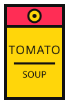
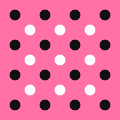

关于本站
本站没有任何推广和打赏链接，如果您觉得哪个作品不错，欢迎去对应的仓库点个赞，或者在对应的文章下面留言互动一下。
开源项目无任何盈利目的，只在工作闲暇时间进行维护，有相关需求请前往对应项目提 Issue 进行反馈，通过私人邮件询问开源项目问题可能得不到答复。

本站没有任何推广和打赏链接，如果您觉得哪个作品不错，欢迎去对应的仓库点个赞，或者在对应的文章下面留言互动一下。
开源项目无任何盈利目的，只在工作闲暇时间进行维护，有相关需求请前往对应项目提 Issue 进行反馈，通过私人邮件询问开源项目问题可能得不到答复。

